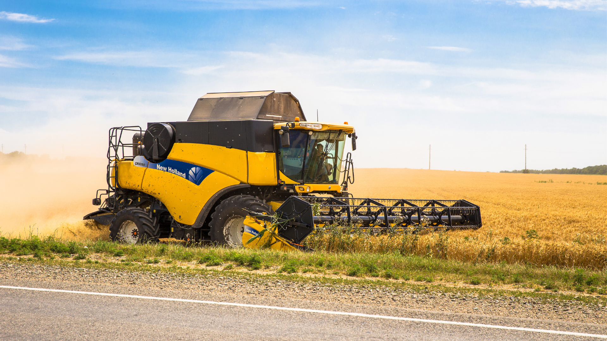
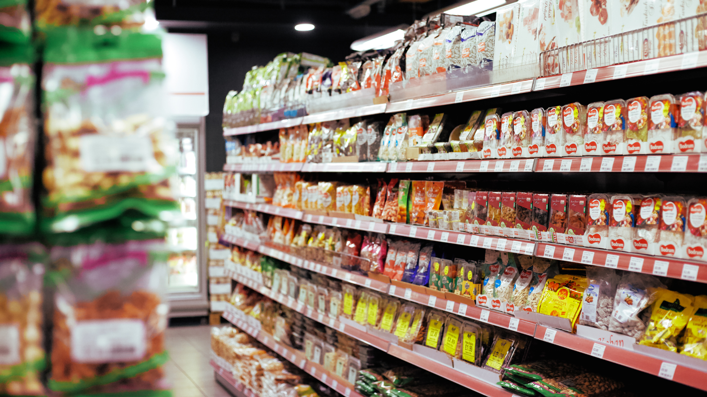
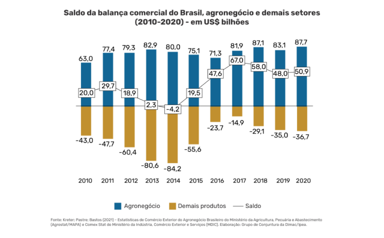

A inovação urbana transforma o campo com máquinas, sistemas e soluções digitais.
Do campo para a mesa urbana: uma ponte essencial para a segurança alimentar.
O comércio entre campo e cidade impulsiona o desenvolvimento mútuo.
A cidade fornece ao campo tecnologias como tratores modernos, drones agrícolas, sistemas de irrigação inteligente e softwares de monitoramento de produção. Essas ferramentas aumentam a produtividade, reduzem o desperdício e facilitam a gestão rural.
A produção agrícola abastece feiras, supermercados e merendas escolares. O transporte eficiente garante que alimentos frescos cheguem diariamente às cidades, promovendo a saúde e a economia. É uma rede interligada que depende da conexão entre campo e cidade.
O comércio entre produtores rurais e consumidores urbanos gera empregos, movimenta o mercado e fortalece a cultura local. Feiras e parcerias incentivam o consumo consciente e a valorização dos produtos regionais.
GitHub: https://github.com/aiujl
Email: julia.moraaiss@gmail.com